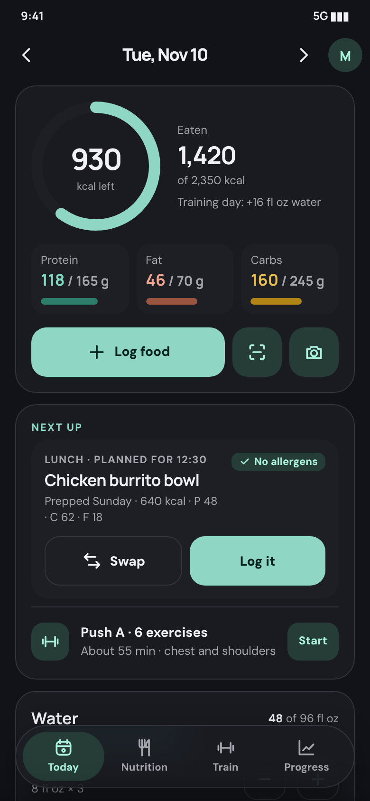
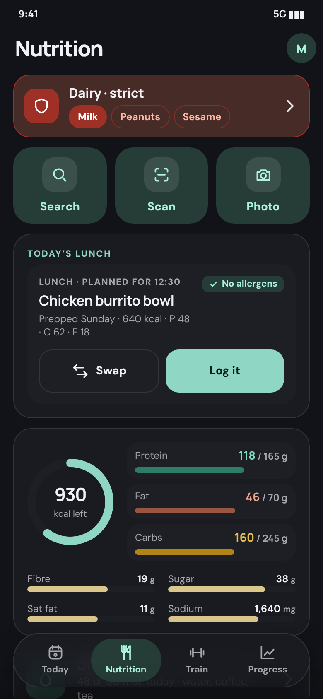
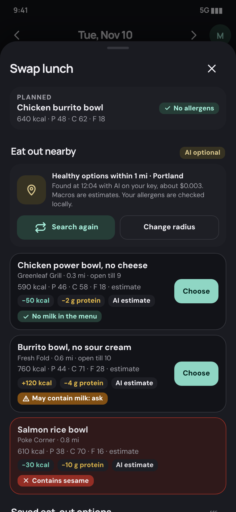
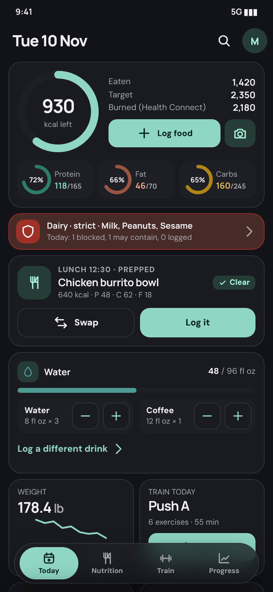
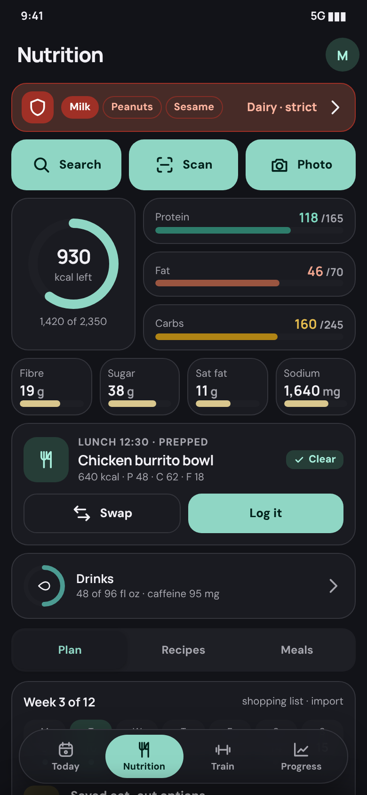
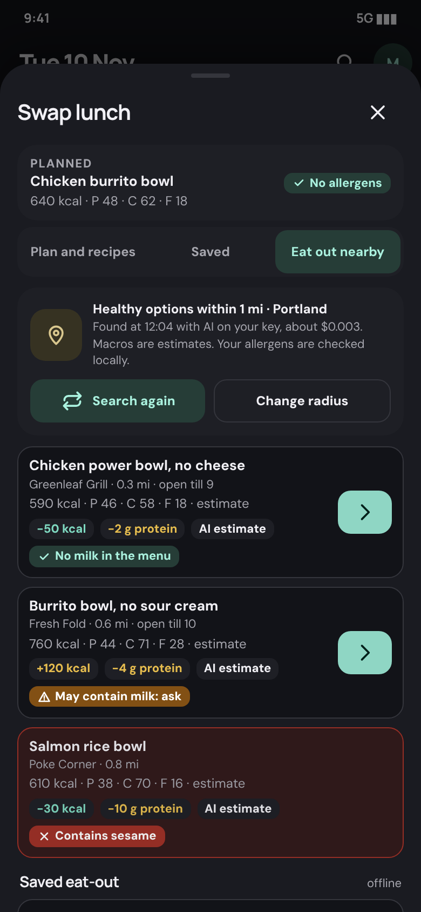
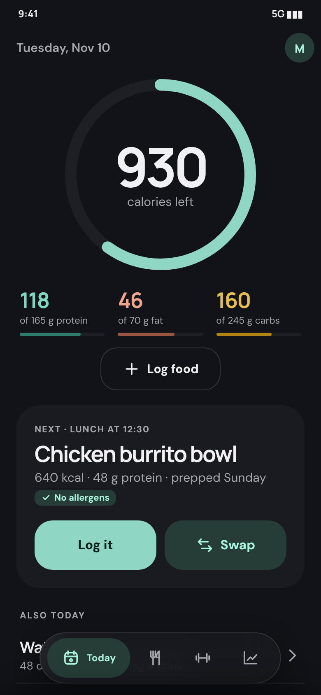
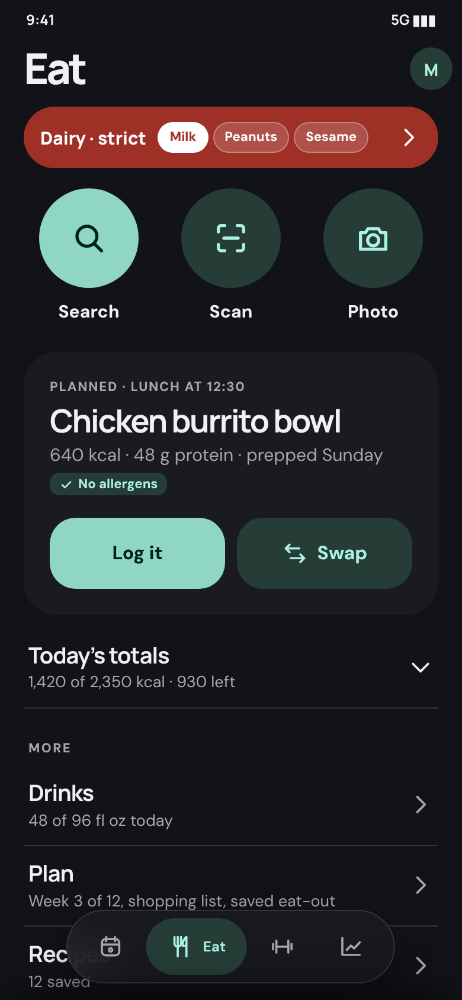
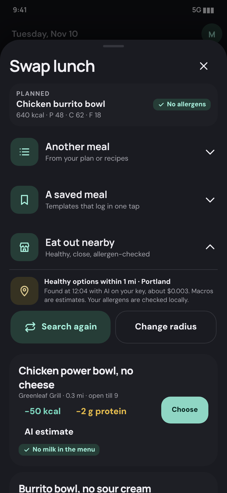

Each option is a clickable 390 × 844 phone: the pill switches tabs, rows drill in, arrows go back, and the chips above the phone jump to any of its 27 frames (15 screens plus all 12 Settings group pages). All three carry the same fixes from your feedback: Nutrition instead of Food (option C: Eat), an allergen strip and a rich Allergens screen, Photo as a third primary way to log, Swap on the planned meal with Eat out nearby, and a complete Settings (113 controls, 12 groups). Colours, type scale and shapes are the app's real tokens. Nothing here has been seen on a device.
The app you have now, tidied. Big outlined cards, tonal icon squares, large list rows and the labelled frosted pill you know, with v5's structure on top. Search, Scan and Photo are three big tonal tiles; Swap is a tall sheet that lists eat-out options first, then saved ones, then your plan. Settings is one long list of group rows. Least surprise, easiest to build on today's components.



Denser and glanceable. Calories and three macro rings up front, an allergen status tile on Today, tiles for weight, training, steps and sleep, a nutrient grid on Nutrition, and sheets with tabs (Log: Search | Scan | Photo; Swap: Plan | Saved | Eat out). A compact, solid-highlight pill. Settings opens on a two-column tile grid with a count per group. For people who want numbers first.



One primary thing per screen. Today is one big "930 calories left" ring and the next meal with Log and Swap; water, workout, weight and meals sit one tap down. The tab is called Eat, with three round hero buttons (Search, Scan, Photo) and a slim allergen pill. Totals, other ways to start and recent sessions hide behind disclosure rows. The pill is icons, with the label only on the active tab. Swap is an accordion. Large type throughout.



A is the one to build. It is closest to what you have installed, so it is the least work and the least relearning, and it already meets every item in your feedback: the strip, three equal log actions, Swap, a complete Settings. It will also read best next to the existing screens.
Borrow from B the allergen status tile on Today (so allergens are visible even before you open Nutrition) and the nutrient tile grid on Nutrition. Borrow from C the large "Next: lunch" card with Log and Swap side by side, and the accordion behaviour for Swap if the tall sheet feels long on a small phone. Use Nutrition, not Eat: it is clearer in the Settings groups and the pill, and "Eat" read as too clipped next to Train and Progress.
C is the best answer if you find the app busy and would trade density for focus; B if you check numbers many times a day.
| Your feedback | A | B | C |
|---|---|---|---|
| Allergens with weight | Red-tinted strip with chips and "Dairy · strict" on Nutrition | One-line strip on Nutrition plus a status tile on Today | Solid red pill on Eat, chips inside |
| Photo estimate | Third of three big tiles | Third of three compact buttons; Photo tab in Log | Third of three round hero buttons |
| Rename Food | Nutrition | Nutrition | Eat |
| Swap + eat out nearby | Stacked sheet, eat out first | Tabbed sheet, defaults to Eat out | Accordion, Eat out open |
| Settings complete | 12 group rows in one card | 12 tiles with counts | 12 large text rows |
Photos, plates and video thumbnails are labelled placeholders. Restaurant names are invented. Slide timing is a CSS approximation of the rule in IA v5 section 2b. Fonts are the app's own Manrope and DM Sans, embedded. Per-frame PNGs are in shots/, with tall versions in shots/full/. Settings content: docs/SETTINGS-INVENTORY.md. Decisions: docs/IA-v5.md section 9.